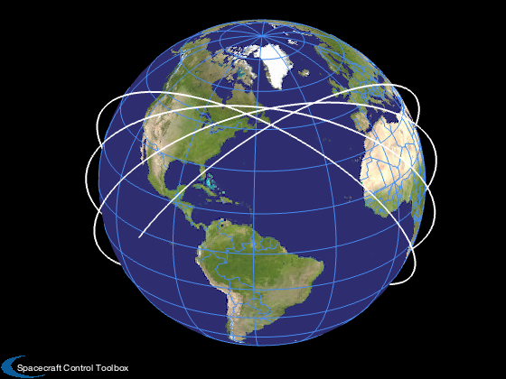
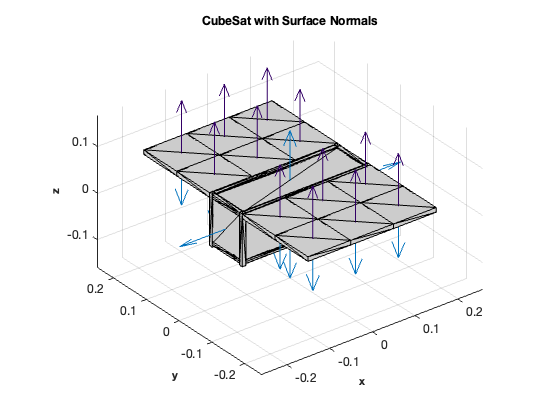
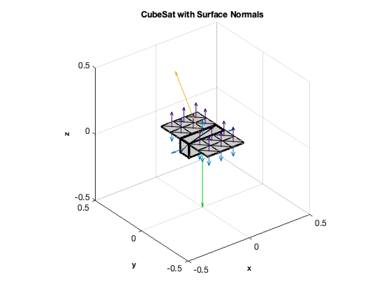
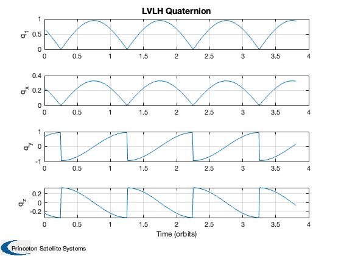
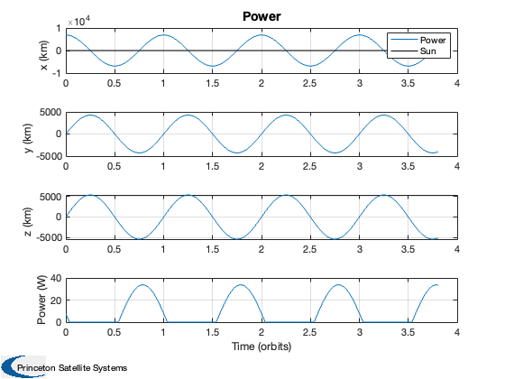

Contents
- Power computation over several orbits.
- Constants
- Battery parameters
- Compute semi-major axis from altitude
- We need the date in Julian Centuries for the sun model
- Compute trajectory from orbital elements
- CubeSat model including the deployed solar panels
- Initialize the array to save time
- Track LVLH coordinates;
- Compute the power in a loop
- Size the battery
Power computation over several orbits.
Create a CubeSat model with large deployed arrays. Compute the power generated by the arrays assuming LVLH pointing.
%------------------------------------------------------------------------ % See also RVFromKepler, Date2JD, JD2T, julianCent, SunV1, Eclipse, % SolarCellPower %------------------------------------------------------------------------
%-------------------------------------------------------------------------- % Copyright (c) 2011, 2020 Princeton Satellite Systems. % All Rights Reserved. %-------------------------------------------------------------------------- % Since 2020.1 %--------------------------------------------------------------------------
Constants
solarFlux = 1367; % W radiusEarth = 6378.165; % km
Battery parameters
capacity = 7.4*0.830; % W-hr dOD = 0.6; % Depth of discharge
Compute semi-major axis from altitude
altitude = 500; % km inc = 51.6*pi/180; % deg - launch from KSFC sma = radiusEarth + altitude;
We need the date in Julian Centuries for the sun model
jD0 = Date2JD([2021 1 2 0 0 0]); t = linspace(0,6*3600,300); julianDate = jD0 + t/86400;
Compute trajectory from orbital elements
[rs,vs,t] = RVFromKepler( [sma inc 0 0 0 0], t ); m = length(t); PlotOrbit( rs, t, jD0 );
CubeSat model including the deployed solar panels
d = CubeSatModel( 'struct' ); d.massComponents = 3; d.solarPanel.dim = [100 100 10]; % [side attached to cubesat, side perpendicular, thickness] d.solarPanel.nPanels = 3; % Number of panels per wing d.solarPanel.rPanel = [-150 -150 -150 -150;100 200 -100 -200;50 50 50 50]; % Location of inner edge of panel d.solarPanel.sPanel = [1 1 1 1;0 0 0 0;0 0 0 0]; d.solarPanel.cellNormal = [0 0 0 0;0 0 0 0;1 1 1 1]; % Cell normal d.solarPanel.sigmaCell = [1;0;0]; % [absorbed; specular; diffuse] d.solarPanel.sigmaBack = [0;0;1]; % [absorbed; specular; diffuse] d.solarPanel.mass = 0.1; [v, f, data] = CubeSatModel( [3 1 1], d ); hF = DrawCubeSat( v, f, data );
Initialize the array to save time
dT = t(2) - t(1); tE = 0; p = zeros(1,m); nEcl = zeros(1,m); uSunBody = zeros(3,m); uNadir = zeros(3,m);
Track LVLH coordinates;
z is in the -r direction y is in the - rxv direction x completes the set; along v in a circular orbit q transforms from ECI to LVLH coordinates
qs = QLVLH(rs,vs);
qPoint = Eul2Q( [pi;0;0] ); % Swap Z axes by rotating 180 around X
Compute the power in a loop
for k = 1:m [uSun, rSun] = SunV1( julianDate(k) ); nEcl(k) = Eclipse( rs(:,k), rSun*uSun ); qECIToBody = QMult( qs(:,k), qPoint ); uSunBody(:,k) = QForm(qECIToBody,uSun); % the vector to the sun, body frame uNadir(:,k) = QForm(qECIToBody,-Unit(rs(:,k))); % vector to the Earth pSunBody = solarFlux*nEcl(k)*uSunBody(:,k); p(k) = SolarCellPower( data.power, pSunBody ); tE = (1-nEcl(k))*dT + tE; if 1 if k == 1 figure(hF) hA = gca; q(1) = quiver3(hA,0,0,0,uSunBody(1,k),uSunBody(2,k),uSunBody(3,k),0.5,'color',[0.93 0.69 0.13]); q(2) = quiver3(hA,0,0,0,uNadir(1,k),uNadir(2,k),uNadir(3,k),0.5,'color',[0 0.8 0.1]); aa = axis; limit = max(abs(aa)); axis(limit*[-1 1 -1 1 -1 1]); else set(q(1),'UData',uSunBody(1,k)); set(q(1),'VData',uSunBody(2,k)); set(q(1),'WData',uSunBody(3,k)); set(q(2),'UData',uNadir(1,k)); set(q(2),'VData',uNadir(2,k)); set(q(2),'WData',uNadir(3,k)); pause(0.1) end end end tOrb = Period(sma); Plot2D(t/tOrb,qs,'Time (orbits)', {'q_1' 'q_x', 'q_y' 'q_z'}, 'LVLH Quaternion' ); Plot2D(t/tOrb,[rs;p],'Time (orbits)', {'x (km)' 'y (km)', 'z (km)' 'Power (W)'}, 'Power' ); hold on plot(t/tOrb,max(p)*nEcl,'k') legend('Power','Sun')  
Size the battery
pTotal = sum(p)*dT; pAve = pTotal/t(end); pStored = pAve*tE/3600; batteryCapacity = pStored/(1-dOD); fprintf('Total time %8.1f hr\n',t(end)/3600); fprintf('Eclipse Time %8.1f hr\n',tE/3600); fprintf('Total power input %8.1f Wh\n',pTotal/3600); fprintf('Depth of discharge %8.1f%%\n',dOD*100); fprintf('Battery Storage %8.1f Wh\n',pStored); fprintf('Battery Capacity %8.1f Wh\n',batteryCapacity); fprintf('Li-Ion Polymer %8.1f Wh\n',capacity); %-------------------------------------- % $Date$ % $Id: fe447f255c71e0bfbbd3155edf654c478aa1cb05 $
Total time 6.0 hr Eclipse Time 2.3 hr Total power input 60.9 Wh Depth of discharge 60.0% Battery Storage 23.0 Wh Battery Capacity 57.5 Wh Li-Ion Polymer 6.1 Wh